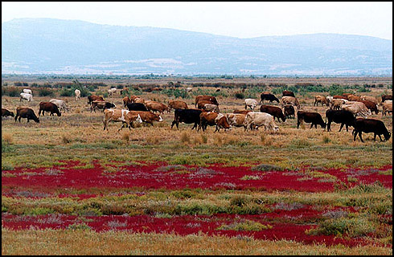
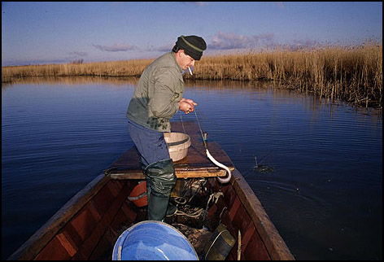

Σήμερα η Ευρώπη είναι τόσο πυκνοκατοικημένη και έχει μακρά ιστορία στη βιομηχανοποίηση, που πραγματικά πολύ λίγοι υγρότοποι έχουν διατηρηθεί. Στη πραγματικότητα, αυτοί οι υγρότοποι που απέμειναν, αντιπροσωπεύουν το ένα τρίτο της επιφάνειας που υπήρχε στις αρχές του 20ου αιώνα. Η μεγαλύτερη όμως καταστροφή των υγροτόπων εξ αιτίας της αποξήρανσης έγινε στο τέλος του 2ου Παγκοσμίου Πολέμου, τότε που υπήρχε μεγάλη ανάγκη καλλιεργήσιμης γης και οι κάτοικοι έπρεπε να απαλλαγούν από την ελονοσία.
Οι υγρότοποι επιτελούν μια μεγάλη ποικιλία λειτουργιών οι οποίες είναι απαραίτητες για την υποστήριξη της ζωής των φυτών και των ζώων καθώς και για τη διατήρηση της ποιότητας του περιβάλλοντος. Οι υγρότοποι επίσης είναι άρρηκτα συνδεδεμένοι με το υγρό στοιχείο και με την υδρολογία της λεκάνης απορροής τους. Οποιαδήποτε αλλοίωση συμβαίνει στη λεκάνη απορροής θα προκαλέσει αλλοιώσεις στον υγρότοπο. Δυστυχώς οι λειτουργίες αυτές πολλές φορές έχουν διαταραχθεί ή αναστραφεί από τις ανθρώπινες παρεμβάσεις και τα αναπτυξιακά σχέδια. Διαχρονικά έχει αποδειχθεί ότι οι υγρότοποι μακροπρόθεσμα υπηρετούν την ανθρώπινη κοινωνία και τα οφέλη που απορρέουν υπερβαίνουν κατά πολύ αυτών που προκύπτουν από τους βραχυπρόθεσμους αναπτυξιακούς σχεδιασμούς της ανατροπής και της διατάραξης της ισορροπίας των υγροτόπων.
Κύριες αιτίες της αποξήρανσης των υγροτόπων θεωρούνται, η αγροτική, βιομηχανική και αστική ανάπτυξη καθώς και ο τουρισμός. Κατά το παρελθόν, οι αποξηράνσεις γινόταν συνήθως για τη γεωργία και ιδιαίτερα για να αποδοθούν περισσότερες εκτάσεις, οι οποίες ήταν φυσικά βοσκοτόπια, στην καλλιέργεια συγκομιδών όπως το σιτάρι. Άλλες παραδοσιακές αιτίες της αποξήρανσης ήταν η εξολόθρευση των κουνουπιών και της ελονοσίας.
Σήμερα όμως πίσω από τις αποξηράνσεις βρίσκεται η οικιστική ανάπτυξη, η εκβιομηχάνιση και η τουριστική ανάπτυξη. Ο ρυθμός της ανάπτυξης αυτής είναι μεγάλος και γρήγορος, τα δε αποτελέσματά της αρνητικά για τους υγροτόπους.
Τα υδρολογικά προγράμματα όπως είναι η άντληση του υπόγειου νερού, οι εκτροπές των ποταμών και οι κατασκευές μεγάλων φραγμάτων για υδρευτικούς σκοπούς, αποτελούν την κύρια απειλή των υγροτόπων. Οι σύγχρονες, φτηνές και κινητές αντλίες δίνουν τη δυνατότητα στους αγρότες να αντλήσουν μεγάλες ποσότητες νερού από τα υπόγεια στρώματα των υγροτόπων αλλά και από την περιφερειακή ζώνη. Καθώς η στάθμη του γλυκού νερού καταβαίνει λόγω άντλησης, ο υγρότοπος στεγνώνει και το θαλασσινό νερό ανέρχεται και καταλαμβάνει τους θύλακες που κατείχε το γλυκό νερό. Η υδρολογική ισορροπία στους υγροτόπους είναι ένα πολύ ευαίσθητο και εύθραστο σύστημα, η δε ανατροπή ή διατάραξη του συστήματος θα μπορούσε να προκαλέσει πολύ σοβαρά προβλήματα και πολύ πιθανά μη αναστρέψιμα.
Οι ποταμοί και οι κατακλυσμένες με νερό περιοχές των υγροτόπων έχουν πληρώσει το τίμημα των υδρολογικών και αντιπλημμυρικών έργων. Πολλοί λίγοι ποταμοί έχουν παραμείνει άθικτοι και είναι αβέβαιο μέχρι πότε, αφού και σήμερα νέα φράγματα και υδρολογικά προγράμματα σχεδιάζονται και για τους τελευταίους φυσικούς ποταμούς.
Τα παρόχθια δάση έχουν υποστεί σοβαρές υποβαθμίσεις και μειώσεις της έκτασής τους σε όλες τις ευρωπαικές χώρες. Μόνο στενές λωρίδες παρόχθιου δάσους κατά μήκος των οχθών των ποταμών συναντούμε πλέον.
Ενας άλλος αυξανόμενος κίνδυνος είναι αυτός της ρύπανσης από τις αποστραγγίσεις και τα αγροχημικά λιπάσματα τα οποία συμβάλλουν σε μεγάλο βαθμό στον ευτροφισμό των λιμνών και λιμνοθαλασσών. Η ποιότητα των νερών ενός μεγάλου αριθμού υγροτόπων υποβαθμίζεται με την αυξανόμενη φόρτιση από φώσφορο και νάτριο. Αυτό οδηγεί στην ανάπτυξη ανεπιθύμητων ειδών βλάστησης, αλγών τα οποία απορροφούν το οξυγόνο. Η έλλειψη οξυγόνου οδηγεί στους μαζικούς θανάτους ψαριών, στην καταστροφή σημαντικών κοινωνιών μονοκυτταρικών οργανισμών τα οποία παίζουν σημαντικό λειτουργικό ρόλο στο οικοσύστημα.
Η υπεραλίευση είναι ένα διαρκές πρόβλημα για τις Μεσογειακές λιμνοθάλασσαες και λίμνες. Η εισαγωγή φτηνών και έγχρωμων πλαστικών διχτυών οδήγησε στη χρήση περισσότερων διχτυών από εκείνα που χρησιμοποιούσαν κατά το παρελθόν. Ομοίως η χρησιμοποίηση διχτυών με μικρό "μάτι" σήμανε την αλίευση μεγαλύτερων ποσοτήτων ψαριών. Η χρήση μηχανών στις βάρκες είχε σαν αποτέλεσμα να προσεγγίζεται με ευκολία κάθε απομονωμένο σημείο της λίμνης ή της λιμνοθάλασσας. Η διατάραξη αυτή στους βιοτόπους των ψαριών ακόμη και σε περιοχές εκτός του βιοτόπου τους, έχει αρνητικά αποτελέσματα στα ψάρια των λιμνοθαλασσών αφού μεταναστεύουν κάθε χρόνο στην ανοικτή θάλασσα .
Η εντατική ιχθυοκαλλιέργεια η οποία συχνά έρχεται σε σύγκρουση με την παραδοσιακή αλιεία στις λιμνοθάλασσες δεν θα πρέπει να εφαρμόζεται σε φυσικούς υγροτόπους. Τα αποτελέσματα πολλές φορές είναι επικίνδυνα για την ποιότητα των νερών εξ αιτίας των διαφόρων χημικών, των εκκρίσεων και των βακτηριδιακών μολύνσεων.
Όσο η βόσκηση με ορθό τρόπο βοηθά στη διατήρηση της ποικιλότητας της φυτικής ύλης στα υγρά λιβάδια, τόσο η υπερβόσκηση των υγρών λιβαδιών και των βοσκοτόπων έχει σαν αποτέλεσμα την υποβάθμιση του εδάφους, την καταστροφή των ενδιαιτημάτων και των φωλιών των πουλιών.
Το κυνήγι είναι μια από τις μεγαλύτερες απειλές της άγριας ορνιθοπανίδας των υγροτόπων. Υπάρχουν περίπου 9 εκατομμύρια κυνηγών σε όλη την Ευρώπη εγγεγραμένοι σε συλλόγους και οι μισοί από αυτούς βρίσκονται στη Μεσόγειο.
Κάθε χρόνο σκοτώνονται εκατομμύρια υδρόβια πουλιά. `Ενα μεγάλο πρόβλημα που προκύπτει από το κυνήγι είναι τα σκάγια μολύβδου που πέφτουν στα ρηχά νερά των υγροτόπων. `Εχει υπολογιστεί ότι πάνω από χίλιους τόνους από σκάγια μολύβδου υπάρχουν κάθε χρόνο στους μεσογειακούς υγροτόπους. Η μολυβδίαση των υδρόβιων πουλιών είναι μια σοβαρότατη απειλή. Καθώς τα πουλιά αυτά ψάχνουν για την τροφή τους στα ρηχά νερά, τρώνε και τα σκάγια . Στις Ηνωμένες Πολιτείες Αμερικής τα σκάγια μολύβδου έχουν αντικατασταθεί από ατσάλινα σκάγια.
Παρ`όλα αυτά, το κυνήγι θα μπορούσε να ασκείται στους υγροτόπους εφ`όσον υπάρχει αυστηρή φύλαξη και έλεγχος, τήρηση των κανονισμών και απαγορεύσεων που υπάρχουν για κάθε περιοχή έτσι ώστε να μπορούν οι πληθυσμοί των πουλιών να αυξάνονται και να βρίσκουν χώρους φωλεοποίησης. Αν και οι ειδικοί συνιστούν ότι το κυνήγι απαγορεύεται κατά τη διάρκεια της αναπαραγωγής ή πριν τη φθινοπωρινή μετανάστευση, εν τούτοις υπάρχουν κυνηγοί που δραστηριοποιούνται κατά τις εποχές αυτές.
Η όχληση που δημιουργείται από τους επισκέπτες των υγροτοπικών περιοχών και ο ελλειπής έλεγχος της εισόδου των τουριστών στον υγρότοπο, αποτελεί μία επιπλέον απειλή και μάλιστα αυξανόμενη κατά τα τελευταία χρόνια. Όσο και αν οι τουρίστες θεωρούνται μια πηγή οικονομικού οφέλους για την ευρύτερη περιοχή του υγροτόπου, ο τουρισμός δεν παύει να είναι και μια πηγή διατάραξης και όχλησης της ζωής των πουλιών. Ιδιαίτερα όταν δεν υπάρχει ολοκληρωμένο σχέδιο διακίνησης των τουριστών σε ένα υγροτοπικό οικοσύστημα , το οποίο να λαμβάνει υπ`όψιν του τη φέρουσα ικανότητα του υγροτόπου, την εποχή επίσκεψης, τα μέσα επίσκεψης και τον τρόπο ξενάγησης σ`ένα υγρότοπο. Κατά τα τελευταία χρόνια, με το πρόσχημα της ενημέρωσης του κοινού και της αύξησης των εσόδων από τον υγρότοπο, οργανώνονται ξεναγήσεις με βαρκάδες μέσα στις λιμνοθάλασσες και στα ποτάμια του υγροτοπικού συστήματος κατά τρόπο ανεξέλεγκτο και πραγματικά επικίνδυνο για την ήσυχη και εύθραστη ζωή των πουλιών. Αυτά που μπορεί να δεί και να απολαύσει ένας επισκέπτης του υγροτόπου με την πεζοπορία και την παρατήρηση από συγκεκριμένες τοποθεσίες με τη δημιουργία παρατηρητηρίων, δεν μπορούν να συγκριθούν με κανένα άλλο τρόπο ξενάγησης.